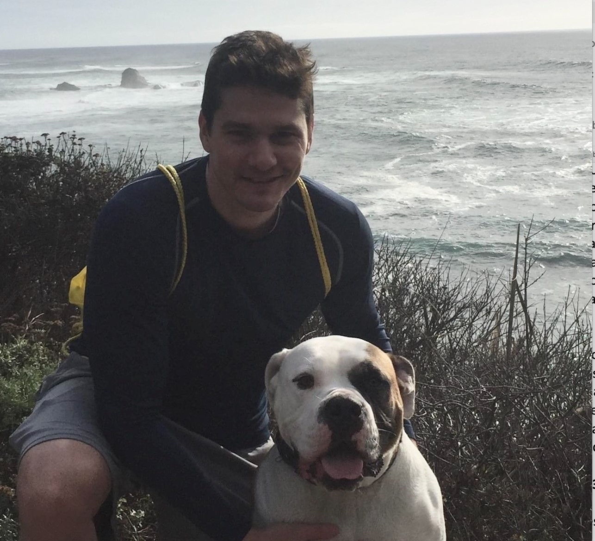

About the Authors
Pavan Vaddady

Pavan Vaddady currently serves as the Head of Advanced Pharmacometrics within the Quantitative Clinical Pharmacology Department at Daiichi Sankyo, Inc. During his career, he led several early and late-stage development programs across multiple therapeutic areas both as a clinical pharmacologist and a pharmacometrician and applied model informed approaches to impact key drug development decisions. His current role involves developing a team of scientists for advanced pharmacometrics aspects including complex pharmacometrics modeling and simulation, disease progression, AI/ML, Bayesian approaches, MBMA across a portfolio of compounds. He is passionate about teaching and mentoring colleagues and has delivered comprehensive courses and tutorials on NONMEM, R, Stan, and Shiny for pharmacometricians. He obtained his B. Pharm. (Hons.), and M. Pharm. from BITS Pilani, India and his Ph.D. in pharmaceutical sciences from the University of Tennessee Health Science Center, Memphis, USA.
Casey Davis

Casey received a Bachelor’s degree in Mathematics and then a Master’s in Applied Economics from UNC Greensboro. He decided to further his education by pursuing a PhD in Statistics from Ohio State University where he focused on Bayesian methods. He has spent his professional life working in the PK/PD world at Merck, Amgen, and Gilead spending a lot of time learning pharmacology and drug development while researching and advancing new tools and methods, particularly of the Bayesian variety, for implementation in the pharmacometrics space. He likes to play soccer, work out, go on random excursions with his dog, and go to punk, hardcore, and hip-hop shows. When he puts his shoes and socks on, he goes sock, sock, shoe, shoe.
Contributors
- Yasong Lu, Daiichi Sankyo, Inc.
- Arya Pourzanjani, Amgen